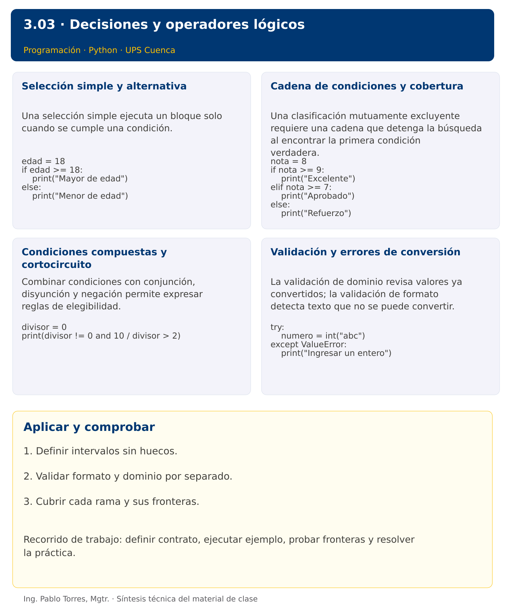

Programación
3.03 · Decisiones y operadores lógicos · Java
Autor: Ing. Pablo Torres, Mgtr.
Unidad 3: Lenguaje de Programación
Institución: Universidad Politécnica Salesiana · Computación · Cuenca
Índice del curso · Versión Python · Presentación Python · Anterior · Siguiente
Conceptos · Demostración · Práctica de clase · Lo esencial
Contexto. Clasificar una medición como inválida, baja, adecuada o alta. El orden de las decisiones determina si los límites se interpretan correctamente y si una medición obtiene una sola categoría.
Prerrequisitos. Conversiones, operadores y valores booleanos.
Versión complementaria. Estudiar el mismo problema y los mismos casos de Python mediante construcciones idiomáticas de Java. La presentación compartida corresponde a Python.
1. Conceptos y ejemplos
1.1. Selección simple y alternativa
Una selección simple ejecuta un bloque solo cuando se cumple una condición. Una alternativa completa define qué hacer también cuando no se cumple. La condición se evalúa antes del bloque. Escribir la regla en palabras y probar valores a ambos lados del umbral, incluido el propio umbral. No confundir “mayor que” con “mayor o igual que”.
Aplicar en Java. Usar if y else con paréntesis para la condición y llaves para el bloque. Incluir llaves aun para una sola instrucción reduce errores cuando se agrega una segunda.
int edad = 18;
if (edad >= 18) {
System.out.println("Mayor de edad");
} else {
System.out.println("Menor de edad");
}
1.2. Cadena de condiciones y cobertura
Una clasificación mutuamente excluyente requiere una cadena que detenga la búsqueda al encontrar la primera condición verdadera. Varios if independientes pueden ejecutar más de una rama. Ordenar umbrales de forma coherente. Definir intervalos sin huecos ni solapamientos y establecer qué hacer con valores fuera del dominio antes de clasificarlos.
Aplicar en Java. Usar if, else if y else. Una comparación encadenada como 0 <= nota <= 10 no es válida: escribir nota >= 0 && nota <= 10. Mantener idénticos límites a la versión Python.
int nota = 8;
if (nota >= 9) {
System.out.println("Excelente");
} else if (nota >= 7) {
System.out.println("Aprobado");
} else {
System.out.println("Refuerzo");
}
1.3. Condiciones compuestas y cortocircuito
Combinar condiciones con conjunción, disyunción y negación permite expresar reglas de elegibilidad. El cortocircuito omite la evaluación derecha cuando la izquierda ya decide el resultado. Esto permite proteger una operación, pero el orden debe ser intencional. Aplicar De Morgan al negar rangos completos y no solo a una parte.
Aplicar en Java. Usar divisor != 0 && dividendo / divisor > 2.0. && y || realizan cortocircuito. Comparar texto con equals en lugar de ==, que compara identidad de referencias.
int divisor = 0;
System.out.println(divisor != 0 && 10.0 / divisor > 2);
1.4. Validación y errores de conversión
La validación de dominio revisa valores ya convertidos; la validación de formato detecta texto que no se puede convertir. Son controles distintos. Una excepción no debe ocultarse como si el dato fuera válido. Capturar el error esperado, producir un mensaje concreto y mantener el contrato. Comprobar todas las ramas y las fronteras de cada intervalo.
Aplicar en Java. Introducir try/catch NumberFormatException. No capturar Exception como sustituto de comprender el error. Después de convertir, comprobar rangos con if.
try {
Integer.parseInt("abc");
} catch (NumberFormatException e) {
System.out.println("Ingresar un entero");
}
Los bloques breves anteriores ilustran una operación y pueden requerir variables o imports del contexto. Utilizar la demostración siguiente como programa completo.
Síntesis visual

2. Demostración guiada
Problema. Clasificar una medición entera de 0 a 100 como Baja si es menor que 40, Adecuada entre 40 y 75 inclusive y Alta por encima de 75.
Contrato de esta demostración. Aceptar la medición ya convertida. Mostrar Inválida fuera de [0,100]. Producir exactamente una categoría. La demostración usa 72; probar también -1, 0, 39, 40, 75, 76, 100 y 101.
Fuente: ejemplos/Demo.java.
public class Demo {
public static void main(String[] args) {
int medicion = 72;
String categoria;
if (medicion < 0 || medicion > 100) categoria = "Inválida";
else if (medicion < 40) categoria = "Baja";
else if (medicion <= 75) categoria = "Adecuada";
else categoria = "Alta";
System.out.println(categoria);
}
}
Ejecutar
Abrir una terminal dentro de 03/3.03-estructuras-control/java/ejemplos/ y ejecutar:
javac -encoding UTF-8 -d build *.java
java -cp build Demo
Salida esperada
Adecuada
Interpretación. Seguir las asignaciones y los bloques en orden, identificar qué instrucción produce cada línea y contrastar con el contrato. Modificar un dato por vez y anticipar el resultado antes de ejecutar. La salida de referencia es una expectativa; el registro de verificaciones indica qué ejecuciones se realizaron.
Ejercicios prácticos progresivos
Resolver los siguientes ejercicios en orden. Entregar enunciado, fuente y resultado propio. Los casos mostrados permiten comprobar el contrato y no sustituyen una prueba adicional de frontera.
Adaptar los mismos datos y resultados a Java. Usar record para registros y bibliotecas estándar para archivos y procesos. Para resultados booleanos, aceptar true/false en Java frente a True/False en Python. Los ejercicios que inspeccionan el intérprete deben inspeccionar la JVM y el JDK equivalentes.
Ejercicio 01. Signo
Clasificar -4 como positivo, negativo o cero.
Caso de comprobación:
Negativo
Ejercicio 02. Paridad
Indicar si 18 es par o impar.
Caso de comprobación:
Par
Ejercicio 03. Mayor de dos
Comparar 7 y 7. Mostrar el mayor o “Iguales” cuando coincidan.
Caso de comprobación:
Iguales
Ejercicio 04. Intervalo cerrado
Indicar si 10 pertenece al intervalo [5,10].
Caso de comprobación:
Dentro
Ejercicio 05. Descuento por cantidad
Aplicar 10% de descuento desde 10 unidades. Para 12 unidades a 5 mostrar total con dos decimales.
Caso de comprobación:
54.00
Ejercicio 06. División protegida
Para dividendo 8 y divisor 0 mostrar “Divisor inválido” sin intentar dividir.
Caso de comprobación:
Divisor inválido
Ejercicio 07. Clasificación de edad
Clasificar 31 en menor de 18, de 18 a 30, de 31 a 50 o mayor de 50. Rechazar negativos.
Caso de comprobación:
31 a 50
Ejercicio 08. Año bisiesto
Determinar si 1900 es bisiesto: divisible por 400 o divisible por 4 y no por 100.
Caso de comprobación:
No bisiesto
Ejercicio 09. Triángulo válido
Recibir lados 3, 4 y 5. Rechazar lados no positivos o que incumplan desigualdad triangular. Clasificar equilátero, isósceles o escaleno.
Caso de comprobación:
Escaleno
Ejercicio 10. Entrada y rango
Convertir el texto “abc” a nota entera entre 0 y 10. Distinguir formato inválido, rango inválido y valor aceptado.
Caso de comprobación:
Formato inválido
3. PC3.03 · Práctica de clase
Leer peso de un paquete y tipo de entrega. Aceptar peso entero entre 1 y 20 y modalidad normal o urgente. Cobrar 3 hasta 5 kg, 6 hasta 10 kg y 10 hasta 20 kg. Agregar 4 por urgencia. Rechazar textos no numéricos, modalidades desconocidas y pesos fuera de rango. Mostrar una única tarifa o un mensaje de error.
Requisitos y restricciones
- Resolver en una sola versión, Python o Java.
- Mantener nombres y responsabilidades indicados; explicar cualquier adaptación idiomática.
- Aplicar únicamente los conceptos ya introducidos.
- Conservar las entradas cuando el enunciado lo exija.
- Distinguir valores fuera de contrato de errores que el programa debe gestionar.
Casos de aceptación de la PC
| Entrada / escenario | Resultado esperado |
|---|---|
| 5, normal | 3 |
| 6, urgente | 10 |
| 20, urgente | 14 |
| 0, normal | peso inválido |
| abc, normal | formato inválido |
| 5, exprés | modalidad inválida |
Probar y registrar evidencia
Crear una carpeta personal PC3.03 separada de las demostraciones. Guardar cada caso con entrada, resultado esperado y resultado real. Compilar javac -encoding UTF-8 -d build *.java y ejecutar java -cp build Solucion; usar Solucion.java como entrada personal. Para entradas de teclado, guardar casos/entrada-01.txt y redirigirla con < casos/entrada-01.txt. Para funciones, crear llamadas con los datos de la tabla.
- Registrar
evidencias/PC3.03.mdcon comandos, versión real, salidas y explicación. - Crear un commit funcional como
feat(pc3.03): implementar-regla-principal. - Obtener el hash real con
git rev-parse HEADy anotarlo en la evidencia. - Revisar el cambio con
git show HASHy comparar avances congit diff HASH_ANTERIOR HASH_ACTUAL. Sustituir los marcadores por hashes reales. - Agregar una prueba de frontera distinta de las incluidas y justificar qué error detectaría.
No se requiere proyecto acumulativo ni rúbrica individual de esta PC.
Lo esencial
- Definir intervalos sin huecos.
- Validar formato y dominio por separado.
- Cubrir cada rama y sus fronteras.
Referencias técnicas
Índice del curso · Versión Python · Presentación Python · Anterior · Siguiente